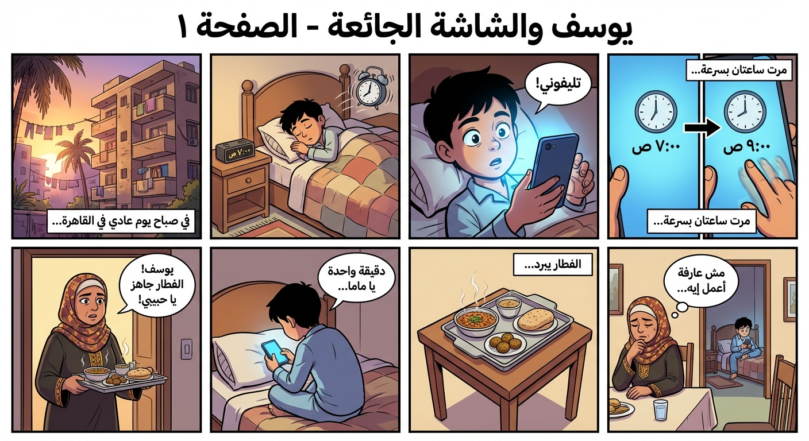
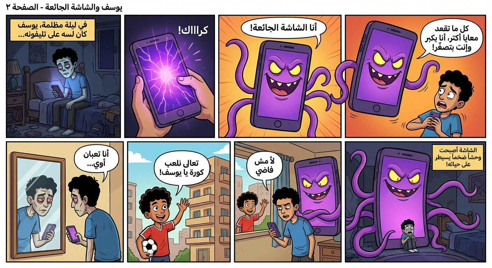
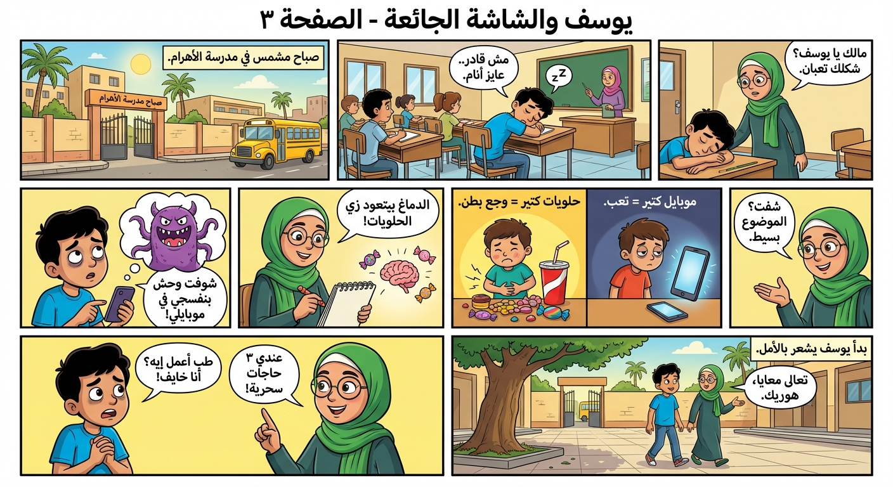
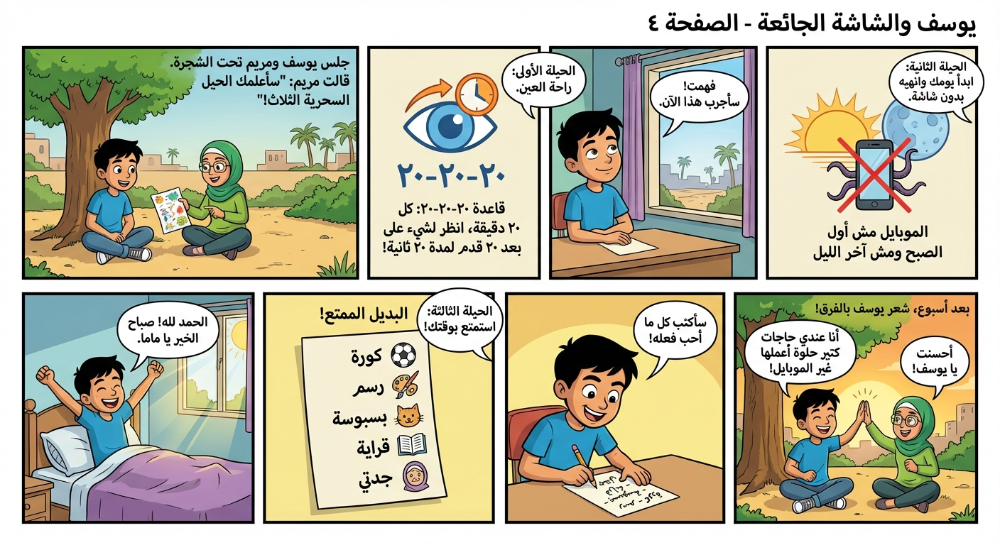
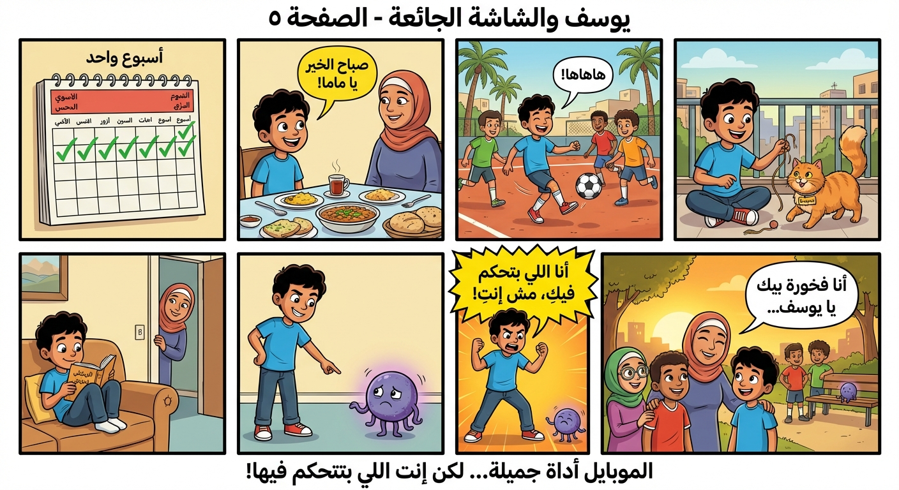

قصة مصورة عن التحكم في العالم الرقمي
٨ - ١٠ سنواتسلسلة CyberPsych Kids - علم النفس السيبراني للأطفال
ثيم مصري عربي إسلامي

لكن الدقيقة بقت عشرة... والعشرة بقوا ساعة. 😔

يوسف بص في المراية ولقى عيونه حمرا، ظهره معوّج، وكان حاسس بصداع ومش قادر يركّز. حتى لما صاحبه أحمد ناداه يلعبوا كورة... يوسف رفض. والشاشة الجائعة فضلت تكبر وتكبر!


